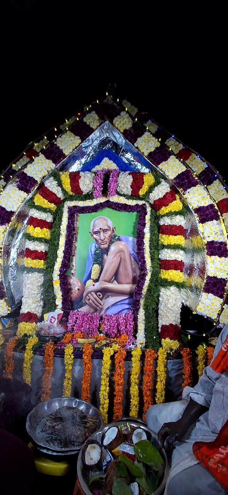

Events & Scheduleకార్యక్రమాలు & షెడ్యూల్

Upcoming eventsరాబోయే కార్యక్రమాలు
Loading…లోడ్ అవుతోంది…
Past eventsగత కార్యక్రమాలు
Saturday annadanam scheduleశనివారం అన్నదాన షెడ్యూల్
Every Saturday, meals are served to all devotees. Devotees may sponsor a Saturday. Pick an open date below to register. ప్రతి శనివారం భక్తులందరికీ అన్నదానం జరుగుతుంది. భక్తులు ఒక శనివారాన్ని స్పాన్సర్ చేయవచ్చు. నమోదు కోసం క్రింద ఖాళీగా ఉన్న తేదీని ఎంచుకోండి.